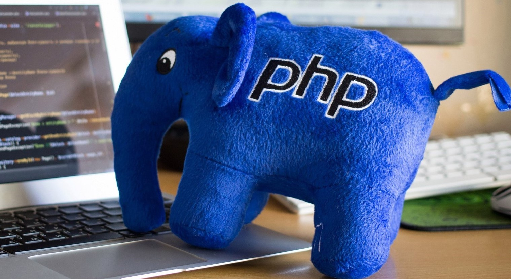

Используемые языки
PHP, как знают фанаты языка, — преемник продукта, который назывался PHP/FI. Первое воплощение PHP, которое в 1994 создал Расмус Лердорф, было простым набором CGI-скриптов на языке программирования Си. Изначально Расмус пользовался скриптами, чтобы отслеживать посещения своего веб-резюме, и назвал набор этих скриптов Personal Homepages Tools («Инструменты для персональных домашних страниц»), но чаще упоминалось название PHP Tools. Со временем требовалось всё больше улучшений функциональности. Расмус переписал PHP Tools и создал более крупную и богатую реализацию. Новая реализация умела взаимодействовать с базами данных и решать другие задачи. Так появилась платформа, на которой пользователи создавали простые динамические веб-приложения наподобие гостевых книг. В июне 1995 года Расмус » выложил исходный код PHP Tools в открытый доступ, что позволило разработчикам использовать наработки Лердорфа по своему усмотрению. Это также разрешало и поощряло пользователей исправлять ошибки в коде и улучшать его.

Код получил ещё одно существенное преобразование в апреле 1996 года. Объединив названия предыдущих версий, Расмус представил PHP/FI. Реализации второго поколения начали по-настоящему развивать PHP из набора инструментов в самостоятельный язык программирования. PHP включал в себя встроенную поддержку баз данных DBM, mSQL и Postgres95, блоки данных cookies, поддержку функций, которые определяли пользователи, и многое другое. В июне PHP/FI присвоили версию 2.0. Интересный факт — существовала только одна полная версия PHP 2.0. Когда она, наконец, в ноябре 1997 года вышла из статуса бета-версии, базовый движок синтаксического анализа уже полностью переписали.

Наши особенности:
- Опыт в разработке крупных веб-приложений.
- Широкий спектр предлагаемых услуг.
- Работа с новыми технологиями и фреймворками.
Услуги
Разработка
Создание веб-приложений и сайтов любого уровня сложности.
Консалтинг
Консультации по использованию современных технологий для вашего бизнеса.
Наши проекты

Проект 1
Описание проекта 1.

Проект 2
Описание проекта 2.

Проект 3
Описание проекта 3.